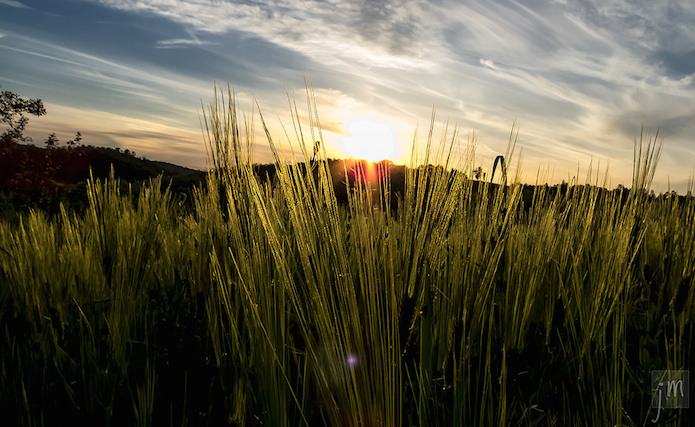

ODI Futures: How open innovation will transform agriculture
On 3 December we held an event focusing on the future of agriculture, in partnership with the Department for Environment, Food and Rural Affairs. Chaired by ODI Head of Research Dr Tom Heath, it gathered stakeholders in the sector to explore data-driven innovation, with a focus on open data.
 Combining data from different sources can help farmers target optimal growing conditions with unparalleled precision. CC BY 2.0, uploaded by [Jovo Milanovic](https://www.flickr.com/photos/jovom/14160090402/in/photolist-nzhaxG-zKuPUo-nbiGw-nUMb2y-vN85P3-fEQMu7-mGmj7-cxtVP9-cxwPcf-5KyHuP-7iu5i-frqNUn-k6Wyb-ny9yFH-eZGysD-qsgdbW-xbaeuS-6LtVLa-A8oCVi-5YCiyS-kYCTrF-dgETHy-df4P8F-7yC3KX-31GmQL-eoTnEo-7yC43p-bubd6Y-ncYLz2-cxp4B3-7yFReq-5kYDVq-f6PgWS-cdnHqA-ez1Xvx-yMFKJm-sQ3nZe-4LU1E-hP2w1y-kBtY2-CaqZL-a7EyNj-qWzcpf-7yC3Se-qHtnX1-BAXWQF-5rodJk-cxoXzw-oj2Vd6-oLiyUv “Jovo Milanovic").
The Rt Hon Liz Truss, Secretary of State for Environment, Food and Rural Affairs opened with a striking description of one of the tests facing the agricultural sector: the world will have to grow enough extra grain each year to fill Wembley stadium 300 times. This is indicative of the challenge we face to feed 9 billion people by 2050. The Secretary of State went on to describe Defra’s pivotal role in driving a ‘data revolution’, which the government hopes will enable UK science and technology groups to contribute to the solution.
In their talks, speakers reinforced the notion that open data has two significant roles to play in the future of agriculture: increasing the effectiveness of existing farming methods and fuelling open innovation in future.
Increasing farming effectiveness
The ODI’s discussion paper, How can we improve agriculture, food and nutrition with open data?, demonstrated how better use of data in enterprises like precision farming and risk modelling helps farmers maximise crop yields, improve the quality of produce and feed growing communities.
Rob Russell, CTO and Director of Senseye, described how his company had combined data from sensors placed in nine farms across the UK with open data from Defra and other sources to better model the risks facing crop growers. The system could be used to inform farmers of potential pest infestations and other risks. Martin Parr, Head of Open Data at CABI, presented a similar approach. Plantwise, a CABI-led initiative, combines multiple open datasets to map pests and diseases as they spread. By tracking them in this way, it could enable farmers to react quickly and minimise the impacts on crop production.
Last year, agriculture firm Syngenta released its own open data. Related to the productivity of over 3,600 farms across 40 countries, the data forms a significant part of their Good Growth Plan. Graham Mullier, Chemoinformatics Team Leader at Syngenta, suggested that although the data was published at an ‘intermediate’ rather than individual farm level, it could be used by farmers to benchmark productivity and ultimately farm more effectively.
We heard how producers in the UK may stand to benefit from open data; in this case, that published by Defra itself. The recent release of the 3D laser mapping LIDAR dataset could, for instance, revolutionise the already booming English wine industry by helping growers identify new land to grow more and better quality grapes. By combining the topographic data (such as aspects, elevations and slopes) with soil profiles and weather data, growers may be able to target optimal growing conditions with unparalleled precision.
Enabling open innovation
While it can help make our existing farming methods more effective, enabling collaborative, open innovation is arguably open data’s most significant role in agriculture.
"The exciting thing about the Open Defra programme is that we don’t quite know where it will lead," explained the Secretary of State, referencing the transformative effect open data has had in another industry: transport. Not many could have predicted that the proliferation of apps built using Transport for London open data would change the way many citizens use public transportation. It is estimated that the value of the TfL data – in terms of time saved by passengers – was between £15-58m in 2012 alone. Could the release of open data by Defra and others, such as Syngenta, have similar unexpected consequences for the sector?
John Crawford, Interim CEO of Agrimetrics, thinks it could. Having spoken to over 200 companies, John argued that "the agriculture sector’s past may not be an accurate guide to its future. The number of solutions we can imagine may only be a tiny fraction of those that are possible."
These solutions may be limited by way the sector currently operates. Robert Allen, Commercial co-chair of Agri Tech East, suggested that the independent and siloed methods in which farms collect, maintain and use data means that they "aren’t that innovative". Similarly, co-founder of ODI Devon, Martin Howitt, argued that more of the data created through the running of agritech systems and machinery should be published as open data, highlighting anonymised farm transaction and real-time Internet of Things data as particularly interesting.
Some attendants were hopeful that more agricultural innovation would be realised as stakeholders became more aware of the data they generate and more open data was released. This open innovation approach, whereby firms incorporate external ideas (and data) into their own work and foster a more permeable boundary between themselves and others, could be what’s required to bring about change in the sector. This is demonstrated by the collaborative groups, initiatives and networks (such as GODAN) that are working to bring together stakeholders, develop standards and encourage the availability of data.
The huge challenges facing the agricultural sector cannot be met by any one firm or government department. As ODI International Development Manager Liz Carolan emphasised, the sector requires completely new models and systems as well as marginal improvements.
It is becoming more apparent that these cannot be brought about without working in collaboration with others. Open data will continue to be used to optimise existing farming techniques and methods, but its role as part of the sector’s open innovation approach may be most significant. In enabling a number of different actors to work together, it may ultimately help to bring about the fundamental changes the sector requires.
What do you think?
If you have ideas or experience in open data that you'd like to share, pitch us a blog or tweet us at @ODIHQ.
Jack Hardinges is Research Assistant at the ODI. Follow @jhardinges1 on Twitter.